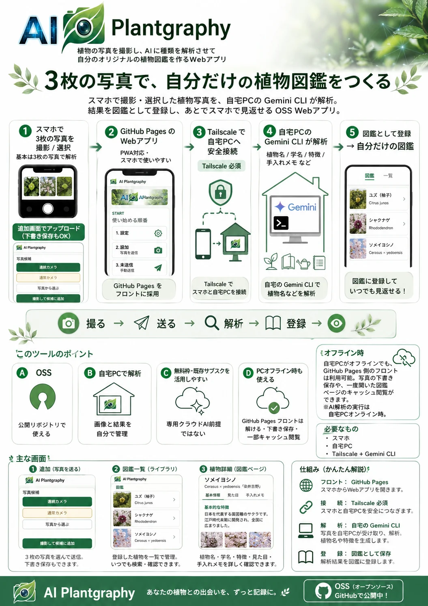
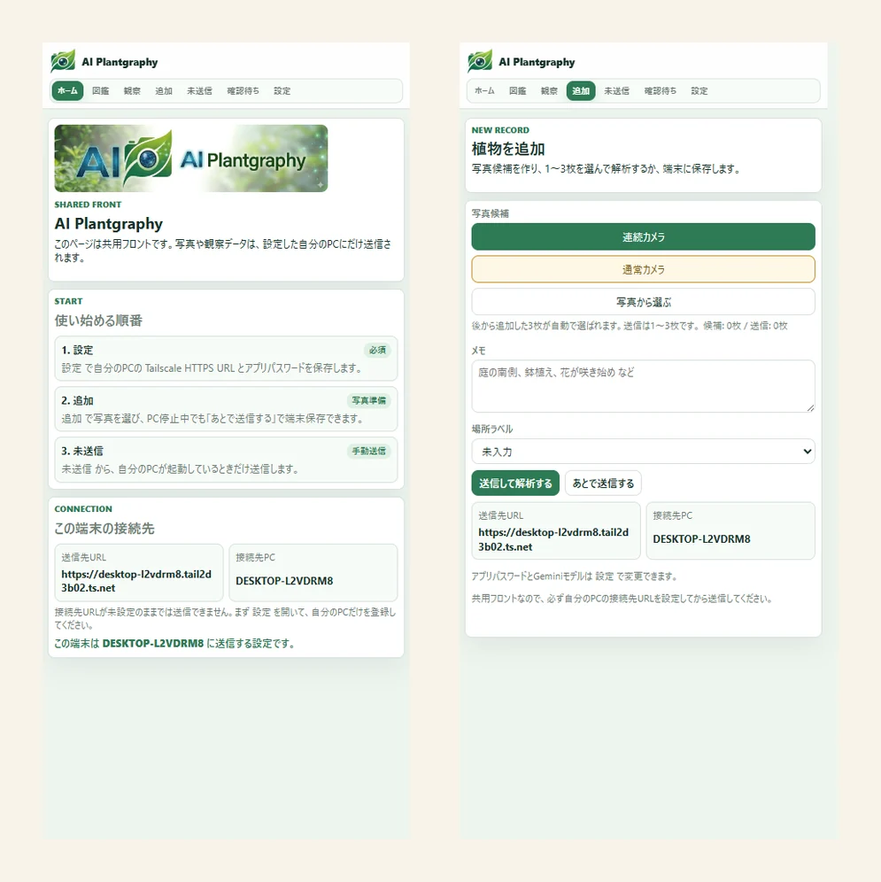

AI Plantgraphy ってなに？
AI Plantgraphy は、スマホで撮った植物写真をAIが解析して、植物の名前や特徴を推定し、自分だけの図鑑に記録できるWebアプリです。庭木・草花・鉢植え・公園で見かけた植物などを、写真と名前、見えている特徴、手入れメモといっしょに残せます。
アプリのインストールは不要で、スマホのブラウザから開いてホーム画面に追加（PWA）すれば、ふつうのアプリのように使えます。写真はクラウドに預けず、解析と保存は自分の家のPCで行うのが特徴で、自分の記録を手元に置いておきたい人に向いています。

1枚でわかる仕組み
むずかしそうに見えますが、使う側の操作は「撮る → 送る → 図鑑にたまる」だけ。下の1枚にぎゅっとまとめてあります。


写真をクラウドに送りっぱなしにしないで、自分の家のPCで調べて保存するのがこのアプリのこだわり。だから「植物の記録は自分の手元に置いておきたい」という人と相性がいいんだ。
できること
- スマホで植物の写真を1〜3枚えらんで送信（右下のボタンから連続撮影もできる）
- 自宅PCのAIが植物名を推定し、候補・見えている特徴・不確実な点まで観察記録として保存
- 同じ種類の植物をまとめ、基本の特徴・見どころ・手入れメモを図鑑側に保存
- スマホから図鑑・観察記録・確認待ちを閲覧。一度開いたページはオフラインでも見返せる
- 写真を自動で軽量化して、スマホ表示が重くなりすぎないように配慮
- zipバックアップ、場所ラベル、AIモデルの選択にも対応
画面イメージ
ホーム画面から撮影、解析待ちの確認、図鑑の閲覧まで、スマホだけで完結します。

こんな人にぴったり
- 庭やベランダの植物を、写真付きで整理したい
- 植物名はAIに調べてもらいつつ、自分の記録として残したい
- なるべく写真をクラウドに預けず、自宅PC中心で使いたい
- アプリのように使える、個人用のWebアプリを試してみたい
使うのに必要なもの
「自宅PCで解析する」しくみのため、はじめに少し準備が必要です（正直なところ、スマホだけで完結する一般アプリよりは手間がかかります）。
- Windows 11 のPC（解析と保存を担当）
- Android または iPhone のスマホ（撮影・閲覧用）
- Antigravity CLI（植物名を推定するAI。Googleアカウントのログインで利用可）
- Tailscale（外出先から自宅PCへ安全につなぐため）と、Git・Python 3.11以上
準備のところはちょっと専門的だけど、リポジトリにWindows用のセットアップ手順（クイックスタート）が用意されているよ。一度組んでしまえば、あとはデスクトップのショートカットから起動するだけ。スマホからはふつうのアプリ感覚で使えるんだ。
使ってみる・ソースコード
AI Plantgraphy はオープンソースで公開されています。共用フロント（入口）の画面は、PCがなくても下のリンクから開いてみられます（解析・保存を行うには上の準備が必要です）。
- 共用フロント（アプリ画面）：harunamitrader.github.io/AI-Plantgraphy/app/
- ソースコード・セットアップ手順（GitHub）：github.com/harunamitrader/AI-Plantgraphy
まとめ
AI Plantgraphy は、「スマホで撮る → 自宅PCのAIが調べる → 自分だけの図鑑にたまる」という流れで、植物の記録を手元に残せるWebアプリです。写真をクラウドに預けたくない人や、植物を写真付きでコツコツ整理したい人にぴったり。準備に少し手間はかかりますが、一度組めばスマホからアプリのように使えます。
このサイトの プラント アニマルズ で木の名前と特徴を眺めて、気になった植物は AI Plantgraphy で自分の図鑑に記録していく——そんな使い方もおすすめです。